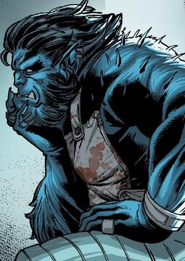
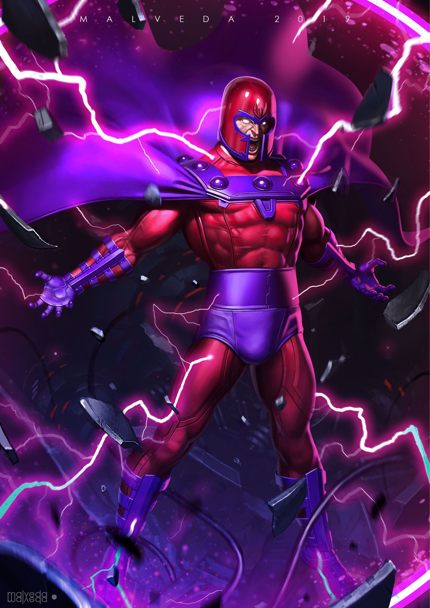
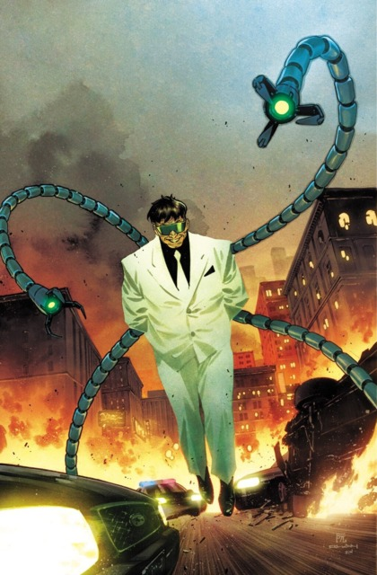

What Makes a Superhero?
Superhero:
noun
su·per·he·ro ˈsü-pər-ˌhir-(ˌ)ō -ˌhē-(ˌ)rō
pluralsuperheroes
: a fictional hero having extraordinary or superhuman powers
also: an exceptionally skillful or successful person
compare SUPERHEROINE, SUPERVILLAIN
Superheroine:
noun
su·per·her·o·ine ˌsü-pər-ˈher-ə-wən -ˈhir-ə-wən, -ˈhe-rə-wən
pluralsuperheroines
: a female fictional hero having extraordinary or superhuman powers: a female superhero
Supervillain:
noun
su·per·vil·lain ˈsü-pər-ˌvi-lən
pluralsupervillains
: a fictional villain having extraordinary or superhuman powers
A superhero comes from various backgrounds and arises from myriads of hardships. Each hero has their own special ability, something that makes them unique and strong.
Whether it's natural born powers, a radioactive accident, or in the possession of lots of money to fuel their tech-savvy minds, each hero has something that makes them stand out.
This applies to villains as well, after all, most villains are heroes who took it too far.
My Favorite Superheroes
| Name |
Alias |
Image |
Superpowers |
Weaknesses |
| Wolverine |
James "Logan" Howlett |
 |
- 1.Indestructible bones via adamantium
- 2.Combat mastery
- 3.Superhuman healing factor,
- 4.Retractable claws
- 5.Superhuman strength, stamina, durability, speed, agility, reflexes, and senses
|
1.Muramasa Blade
2.Carbonadium Digestion
3.Decapitation/Severe Spinal Damage
4.Adamantium Poisoning
|
| Beast |
Hank McCoy |
 |
- 1.Super-humanly Acute Senses
- 2.Superhuman strength, stamina, durability, speed, agility, reflexes, dexterity, and senses
- 3.Regenerative Healing Factor
- 4.Genius-level Intellect
- 5.Claws and Fangs
- 6.Hand-to-Hand Combatant
|
1.Animal Instincts
2.Vulnerable Senses
3.Allergic to Sawdust
|
| Rogue |
Anna Marie LeBeau |
|
- 1.Attribute, memory, and power absorption through physical contact
- -Permanently absorbed superpowers:
- 1.Superhuman strength, speed, stamina, agility, and reflexes
- 2.Near-invulnerability
- 3.Flight
|
- 1.Gets limited part of other's power for a short time
- 2.by being exposed to high enough amounts of powers in her absorbtions
|
| Scarlet Witch |
Wanda Django Maximoff |
|
- 1.Witchcraft
- 2.Chaos Magic
- 3.Reality Warping
- 4.Flight, force fields, invisibility
- 5.Telepathy, telekinesis, Teleportation
- 6.Matter & Energy Manipulation
- 7.Spells and Hexes
|
- 1. vulnerable to dark energy which is a form of dark matter
- 2.Childhood Trauma
- 3.she needs to concentrate on her spells, and casting them takes time.
- 4.Chaos Magic, for all its power, is impossible to tame,it's likely part of it will fail or cancel another aspect out.
|
| Raven |
Raven "Rachel Roth" |
|
- 1.Astral Projection
- 2.Psychokinesis, chronokinesis, electrokinesis, & pyrokinesis.
- 3.Magic, psionics, Dimensional Travel, & Force Field.
- 4.Human-Demon Hybrid
|
- 1.susceptible to overwhelming mystical forces
- 2.being around too many people with heightened emotions can pose a risk to her
|
My Favorite Supervillains
| Name |
Alias |
Image |
Superpowers |
Weaknesses |
| Magneto |
Max "Erik Lehnsherr" Eisenhart |
 |
- 1.Control of Elements
- 2.Magnetism
- 3.Energy Manipulation
- 4.Flight
- 5.Superhuman Intelligence
- 6.Superhuman Speed
- 7.Force Field
|
- Metal Weapons can disrupt his magnetic field
- psionic attacks
- Won't Kill
|
| Poison Ivy |
Pamela Lillian Isley |
 |
- 1.Genius intellect
- 2.Brilliant botanist and toxicologist
- 3.Chlorokinesis
- 4.Seducation
- 5.Toxikinesis
- 6.Toxic immunity
7.Semi-mystical connection to the Green
|
1.Lack of Sunlight
2.Mental Instability
|
| Doc Ock |
Otto Octavius |
 |
- 1.Cybernetic Tentacles
- 2.Genius-level Intellect
|
- Human/Vulnerable
- Arrogance
|
| Green Goblin |
Norman Virgil Osborne |
 |
- 1.Superhuman strength, intelligence, speed, stamina, agility, durability, reflexes, and healing
- 2.Uses Halloween-themed paraphernalia, high-tech gadgetry, and a Goblin Glider equipped with various weapons
- 3.Genius-Level intellect
|
- 1.Mental instability
- 2.Human/Vulnerable
|
| Mystique |
Raven Darkholme |
|
- 1.Metamorphic Adaptation
- 2.Enhance Physical Attributes
- 3.Accelerated Healing
- 4.Toxin & Disease Resistance
- 5.Psychic Defense
- 6.Slow Aging
|
- 1.Appearance Limitation
- 2.Can't gain other mutant abilities via morphing
|
I couldn't focus only on heroes, especially with so many amazing villains, these are only five of my favorite heroes and villains, but I have a long list for both.
But decided to trim it down to only my top five favorites, though I argue they aren't in any specific order as I like all of them and can't decide which I like more.